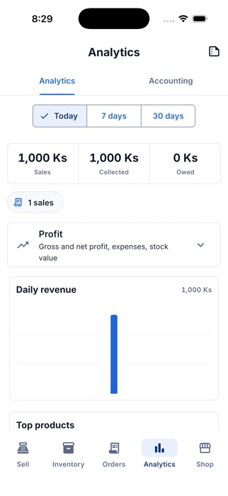
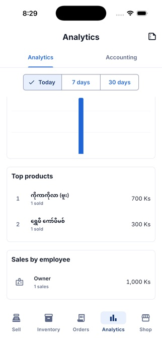
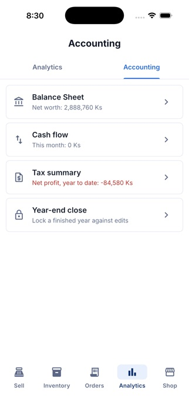

ဝန်ဆောင်မှုများ အားလုံး / Analytics & P&L
Analytics & P&L
Premiumဆိုင်ရှင် (Owner) သီးသန့် Dashboard — ဝင်ငွေ၊ အမြတ်၊ ကုန်ကျစရိတ်၊ လက်ကျန်တန်ဖိုး၊ အကြွေးကျန်ငွေ၊ အရောင်းရဆုံးကုန်ပစ္စည်းများကို Offline အခြေအနေမှာပင် တစ်ချက်ကြည့်ရုံနဲ့ သိနိုင်ပါတယ်။ Staff mode မှာ ဒီ Tab ကို လုံးဝ ဖျောက်ထားသည်။
ရောင်းရငွေ၊ လက်ခံရရှိငွေ နှင့် ရရန်ကျန် ကို plan အားလုံးမှာ မြင်ရပါတယ်။ အမြတ်၊ chart များနှင့် စာရင်းကိုင် စာရင်းများကတော့ Premium လိုအပ်ပါတယ် — Owner Account တစ်ခုလျှင် တစ်ကြိမ် 2 လ Trial ဖြင့် အခမဲ့ စမ်းနိုင်ပါတယ်။ ဈေးနှုန်း ကြည့်ရန် →
အဆင့်ဆင့် အသုံးပြုနည်း

Range ရွေးပြီး KPI Grid ကြည့်ပါ
ယနေ့၊ ၇ ရက် (သို့) ၃၀ ရက် ကို ရွေးပါ။ အပေါ်ဆုံး strip က ထိုကာလအတွက် ရောင်းရငွေ၊ လက်ခံရရှိငွေ၊ ရရန်ကျန် နှင့် အရောင်းအရေအတွက်ကို plan အားလုံးမှာ ပြပါတယ်။ Premium က ရှေ့ကာလနဲ့ နှိုင်းယှဉ်ချက်နှင့် အမြတ် အပိုင်း (အသားတင်/စုစုပေါင်း အမြတ် — အနုတ်ဆိုရင် အနီရောင်၊ ကုန်ကျစရိတ်၊ လက်ကျန်တန်ဖိုး) ကို ထပ်ပေါင်းပေးပါတယ်။ ကိန်းဂဏန်းတစ်ခုကို နှိပ်ရင် သက်ဆိုင်ရာ screen ကို တိုက်ရိုက် ရောက်ပါတယ်။

Chart နှင့် အရောင်းရဆုံးစာရင်း ကြည့်ပါ
Premium ဖြင့် နေ့စဉ် ရောင်းရငွေကို Bar chart နဲ့ ပြပါတယ် — Bar တစ်ခုကို နှိပ်ရင် ရက်စွဲနှင့် ပမာဏ ပြပါတယ်။ အောက်မှာ အရောင်းရဆုံး ပစ္စည်းများ (ရောင်းရအရေအတွက်နှင့် ရောင်းရငွေ) နှင့် ဝန်ထမ်းအလိုက် ရောင်းအား ကို ပြပါတယ်။

စာရင်းကိုင် (Accounting) စာရင်းများ ဖွင့်ကြည့်ပါ
Tab ရဲ့ အပေါ်ဆုံးမှာ စာရင်းအင်း ဘေးက စာရင်းကိုင် sub-tab မှာ စာရင်းကိုင်တစ်ယောက် တကယ်တောင်းမယ့် စာရင်း လေးမျိုး — ဘာလန်ရှိတ် စာရင်း၊ ငွေဝင်ငွေထွက် စာရင်း၊ အခွန် အစီရင်ခံစာ နှင့် နှစ်ကုန် ပိတ်စာရင်း — ရှိပြီး card တစ်ခုစီမှာ လက်ရှိ ကိန်းဂဏန်း ပြပါတယ်။ အားလုံး Offline ရပြီး P&L လိုပဲ Premium ဖြစ်ပါတယ်။
Balance Sheet
ပိုင်ဆိုင်မှု − ကြွေးကျန် − ပိုင်ရှင်ရင်းနှီးငွေ ကို ပြသည်။ ကွာဟမှုရှိရင် ဖုံးကွယ်မထားဘဲ "မှတ်တမ်းမဝင်" ဟု ရိုးသားစွာ ပြသည်။
Cash Flow
ငွေပေးချေမှု အကောင့်တစ်ခုချင်းစီအတွက် အစလက်ကျန်၊ ငွေဝင်၊ ငွေထွက်၊ အဆုံးလက်ကျန် (Default: ဒီလ) — CSV Export ပါသည်။
Tax Summary
ရောင်းအား၊ COGS၊ Gross Profit၊ Category အလိုက် ကုန်ကျစရိတ်၊ Net Profit (Default: ဒီနှစ်)။ Tax ကို ကိုယ်တိုင် မတွက်ပါ — ဂဏန်းချက်ကိုပဲ ပေးပြီး Accountant က တွက်ချက်ရန် ဖြစ်သည်။
Year-end Close
နှစ်တစ်နှစ် ရွေးပြီး Dec 31 အထိ Expenses/Equity မှတ်တမ်းများကို ဒီ Device ပေါ်တွင် ပိတ်နိုင်သည်။ အချိန်မရွေး တစ်ချက်နှိပ်ရုံနဲ့ ပြန်ဖွင့်နိုင်သည်။
သိထားသင့်တဲ့ Tips
P&L စာရင်း — Analytics app bar ပေါ်က icon ကို နှိပ်ရင် ရက်စွဲကာလ ရွေးပြီး Revenue − COGS = Gross Profit၊ Gross Profit − Operating Expenses = Net Profit အထိ တွက်ချက်ပြသော အမြတ်-အရှုံးစာရင်း ရနိုင်သည် (PDF export/print လုပ်နိုင်သည်)။
Owner-only — Staff PIN ဖြင့် ဝင်ရင် Analytics Tab လုံးဝ မမြင်ရပါ — ငွေကြေးအချက်အလက် လုံခြုံမှုအတွက်ဖြစ်သည်။
အားလုံး Offline — Internet မလိုပဲ local ရှိပြီးသား Sale/Expense ဒေတာများကိုသာ တွက်ချက်ပြသည်။
All In One POS ကို ယနေ့ပင် စမ်းကြည့်ပါ
အခမဲ့ စတင်နိုင် — Card မလို၊ Account မလို။ Premium 2 လ Trial ကတော့ Owner Account တစ်ခုလျှင် တစ်ကြိမ်။
ဒေါင်းလုပ်ဆွဲမည်